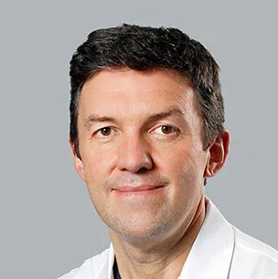
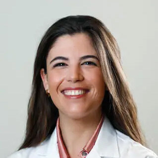
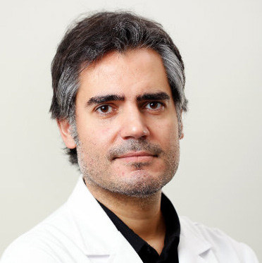
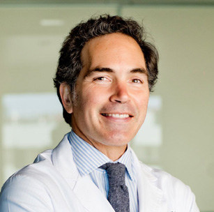

3.05 pm
Surgical Solutions for Aphakia.

Miguel Ruiz, MD
3.15 pm
Experience with Premium Intraocular Lenses in Patients with Retinal Disease.

Irene Liroz-López, MD
3.25 pm
FEVR: Clinical Signs and Surgical Management.
Xavier Subiràs, MD
3.35 pm
Tenon’s Capsule in Vitreoretinal Surgery.

Mariano Rodríguez, MD
3.45 pm
Current Outcomes in the Treatment and Prevention of Retinal Detachment in Stickler Syndrome.

Íñigo Corcóstegui, MD
4.00 pm
Surgical Tips and Tricks: From the Basics to the Most Challenging Cases.
Panel Discussion